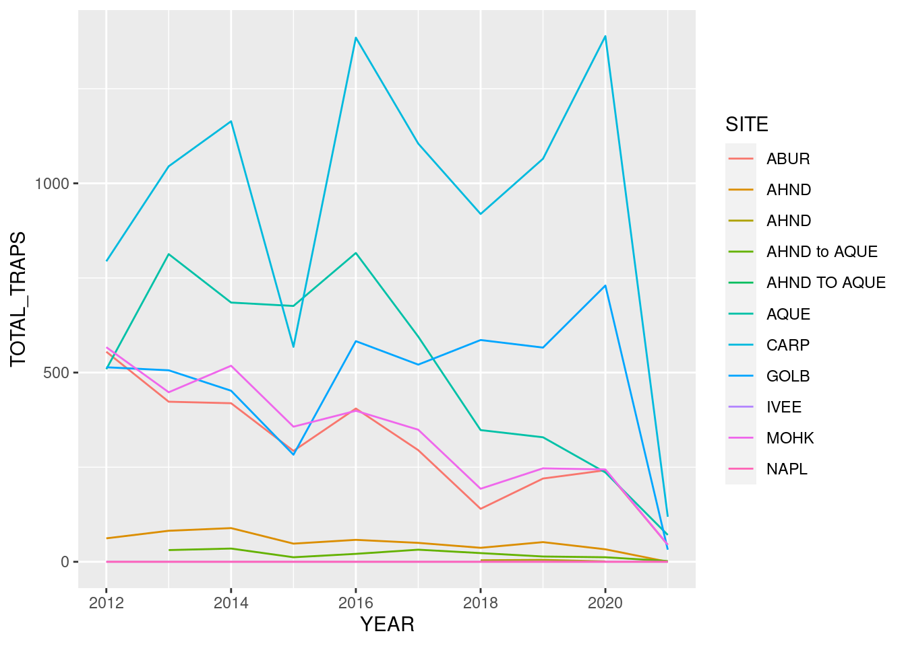

library(readr)
library(dplyr)
library(ggplot2)
library(tidyr)Collaborator Analysis
Exercise: Explore, Clean, and Wrangle Data
About this data
Data on abundance, size and fishing pressure of California spiny lobster (Panulirus interruptus) along the mainland coast of the Santa Barbara Channel from 2012-2021.
Setup
Read the data
lobster_traps <- read.csv("../data/Lobster_Trap_Counts_All_Years_20210519.csv")Exploring the data
glimpse(lobster_traps)Rows: 11,071
Columns: 10
$ YEAR <int> 2012, 2012, 2012, 2012, 2012, 2012, 2012, 2012, 2012, 2…
$ MONTH <int> 10, 10, 10, 10, 10, 10, 10, 10, 10, 10, 10, 10, 10, 10,…
$ DATE <chr> "2012-10-05", "2012-10-05", "2012-10-05", "2012-10-05",…
$ FISHING_SEASON <chr> "2012-2013", "2012-2013", "2012-2013", "2012-2013", "20…
$ SITE <chr> "ABUR", "ABUR", "ABUR", "ABUR", "ABUR", "ABUR", "ABUR",…
$ SEGMENT_START <chr> "119 44.950", "119 44.900", "119 44.850", "119 44.800",…
$ SEGMENT_END <chr> "119 44.900", "119 44.850", "119 44.800", "119 44.750",…
$ TRAPS <int> 16, 13, 21, 10, 10, 6, 2, 0, 5, 7, 11, 17, 10, 15, 13, …
$ OBSERVER <chr> "Matt Kay", "Matt Kay", "Matt Kay", "Matt Kay", "Matt K…
$ NOTES <chr> "FIXED Start/Stop", "FIXED Start/Stop", "FIXED Start/St…summary(lobster_traps) YEAR MONTH DATE FISHING_SEASON
Min. :2012 Min. : 1.00 Length:11071 Length:11071
1st Qu.:2014 1st Qu.: 2.00 Class :character Class :character
Median :2017 Median :10.00 Mode :character Mode :character
Mean :2016 Mean : 7.47
3rd Qu.:2019 3rd Qu.:11.00
Max. :2021 Max. :12.00
SITE SEGMENT_START SEGMENT_END TRAPS
Length:11071 Length:11071 Length:11071 Min. :-99999
Class :character Class :character Class :character 1st Qu.: 0
Mode :character Mode :character Mode :character Median : 0
Mean : -1045
3rd Qu.: 4
Max. : 44
OBSERVER NOTES
Length:11071 Length:11071
Class :character Class :character
Mode :character Mode :character
Convert missing values using mutate() and na_if()
lobster_traps <- lobster_traps %>%
mutate(TRAPS = na_if(TRAPS, -99999))filter() practice
not_napl <- lobster_traps %>%
filter(SITE != "NAPL")Carp_20_traps <- lobster_traps %>%
filter(SITE == "CARP", TRAPS > 20)Exercise: Data Visualization
ggplot(data = lobster_traps, aes(x = TRAPS))+
geom_histogram(bins = 15, na.rm = TRUE)+
facet_wrap( ~ YEAR)
lobsters_traps_summarize <- lobster_traps %>%
group_by(SITE, YEAR) %>%
summarize(TOTAL_TRAPS = sum(TRAPS, na.rm = TRUE))line plot
ggplot(data = lobsters_traps_summarize, aes(x = YEAR,
y = TOTAL_TRAPS))+
geom_line(aes(color = SITE))
line and point plot
ggplot(data = lobsters_traps_summarize, aes(x = YEAR,
y = TOTAL_TRAPS))+
geom_point(aes(color = SITE))+
geom_line(aes(color = SITE))
Bar graph
lobster_traps_fishing_pressure <- lobster_traps %>%
filter(YEAR %in% c(2019, 2020, 2021)) %>%
mutate(FISHING_PRESSURE = if_else(TRAPS >=8,
true = "high",
false = "low")) %>%
group_by(SITE, FISHING_PRESSURE) %>%
summarize(COUNT = n()) %>%
drop_na()Bar plot
ggplot(data = lobster_traps_fishing_pressure,
aes(x = SITE,
y = COUNT,
fill = FISHING_PRESSURE))+
geom_col()+
scale_fill_viridis_d()+
theme(legend.position = "bottom")
Dodged bar plot
ggplot(data = lobster_traps_fishing_pressure,
aes(x = SITE,
y = COUNT,
fill = FISHING_PRESSURE))+
geom_col(position = "dodge")+
scale_fill_viridis_d()+
theme(legend.position = "bottom")